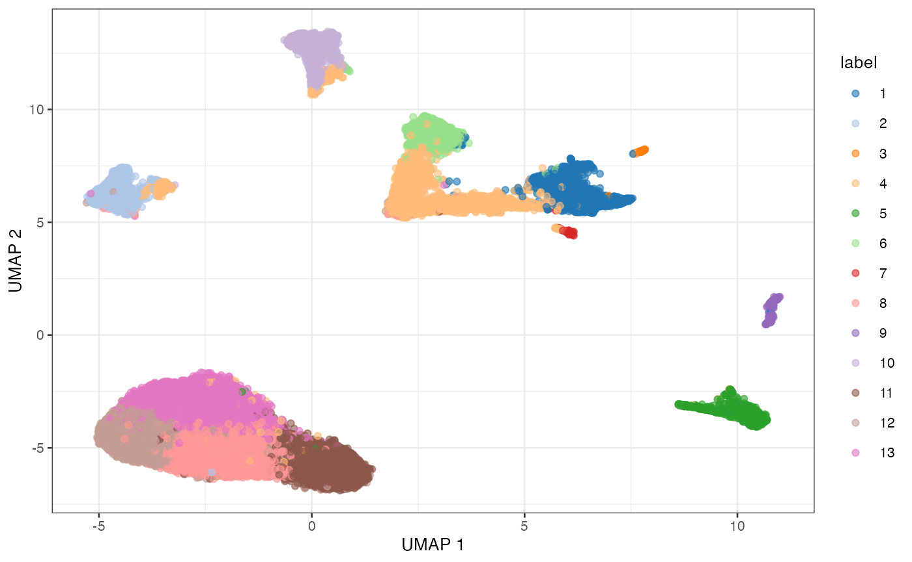

Overview of single-cell analysis in R/Bioconductor
Stephanie Hicks
intro-single-cell-02.RmdOverview
Key resources
- Workshop material: pkgdown website
- Code: GitHub
Part 1
Learning objectives
- Be able to list at least three quality control (QC) metrics for scRNA-seq data
- Know the difference between fixed and adaptive thresholds for QC metrics
- Be able to define a “library size” in terms of normalization
- Describe some common probability distributions used to model scRNA-seq data
- Describe imputation and what it does to scRNA-seq data
Part 2
Learning objectives
- Be able to describe a standard workflow for analyzing single-cell data
- Be able to run code for a standard workflow starting from loading a
SingleCellExperimentin R and identifying clusters.
Overview
Here, we provide an overview of the framework of a typical scRNA-seq analysis workflow:

In the simplest case, the workflow has the following form:
- We compute quality control metrics to remove low-quality cells that would interfere with downstream analyses. These cells may have been damaged during processing or may not have been fully captured by the sequencing protocol. Common metrics includes the total counts per cell, the proportion of spike-in or mitochondrial reads and the number of detected features.
- We convert the counts into normalized expression values to eliminate cell-specific biases (e.g., in capture efficiency). This allows us to perform explicit comparisons across cells in downstream steps like clustering. We also apply a transformation, typically log, to adjust for the mean-variance relationship.
- We perform feature selection to pick a subset of interesting features for downstream analysis. This is done by modelling the variance across cells for each gene and retaining genes that are highly variable. The aim is to reduce computational overhead and noise from uninteresting genes.
- We apply dimensionality reduction to compact the data and further reduce noise. Principal components analysis is typically used to obtain an initial low-rank representation for more computational work, followed by more aggressive methods like \(t\)-stochastic neighbor embedding for visualization purposes.
- We cluster cells into groups according to similarities in their (normalized) expression profiles. This aims to obtain groupings that serve as empirical proxies for distinct biological states. We typically interpret these groupings by identifying differentially expressed marker genes between clusters.
Today and tomorrow, we will describe each analysis step in more detail.
Quick start (simple)
Here, we use the a droplet-based retina dataset from Macosko et
al. (2015), provided in the scRNAseq package. This starts
from a count matrix and finishes with clusters in preparation for
biological interpretation. We also demonstrate how to identify
differentially expressed genes between the clusters.
library(scRNAseq)
sce <- MacoskoRetinaData()
# Quality control (using mitochondrial genes).
library(scater)
is.mito <- grepl("^MT-", rownames(sce))
qcstats <- perCellQCMetrics(sce, subsets=list(Mito=is.mito))
filtered <- quickPerCellQC(qcstats, percent_subsets="subsets_Mito_percent")
sce <- sce[, !filtered$discard]
# Normalization.
sce <- logNormCounts(sce)
# Feature selection.
library(scran)
dec <- modelGeneVar(sce)
hvg <- getTopHVGs(dec, prop=0.1)
# PCA.
library(scater)
set.seed(1234)
sce <- runPCA(sce, ncomponents=25, subset_row=hvg)
# Clustering.
library(bluster)
colLabels(sce) <- clusterCells(sce, use.dimred='PCA',
BLUSPARAM=NNGraphParam(cluster.fun="louvain"))

UMAP plot of the retina dataset, where each point is a cell and is colored by the assigned cluster identity.
# Marker detection (between pairs of groups)
markers <- findMarkers(sce, test.type="wilcox", direction="up", lfc=1)
length(markers)## [1] 13
markers[[1]]## DataFrame with 24658 rows and 16 columns
## Top p.value FDR summary.AUC AUC.2
## <integer> <numeric> <numeric> <numeric> <numeric>
## MEG3 1 0.00000e+00 0.00000e+00 0.867306 0.857315
## TUBA1A 1 3.58784e-81 5.89793e-78 0.609195 0.479862
## SNHG11 1 0.00000e+00 0.00000e+00 0.737419 0.747343
## SYT1 2 3.51850e-268 1.08449e-264 0.786614 0.454677
## CALM1 2 0.00000e+00 0.00000e+00 0.812019 0.665619
## ... ... ... ... ... ...
## VSIG1 24654 1 1 0 0
## GM16390 24655 1 1 0 0
## GM25207 24656 1 1 0 0
## 1110059M19RIK 24657 1 1 0 0
## GM20861 24658 1 1 0 0
## AUC.3 AUC.4 AUC.5 AUC.6 AUC.7 AUC.8
## <numeric> <numeric> <numeric> <numeric> <numeric> <numeric>
## MEG3 0.6814265 0.463403 0.806255 0.478814 0.1822596 0.888640
## TUBA1A 0.1162662 0.315768 0.422655 0.289249 0.4529957 0.541010
## SNHG11 0.0822847 0.562474 0.741261 0.703891 0.0228628 0.742098
## SYT1 0.5354274 0.317921 0.786614 0.307464 0.0591646 0.549534
## CALM1 0.1535742 0.370682 0.715928 0.425258 0.0105809 0.791806
## ... ... ... ... ... ... ...
## VSIG1 0 0 0 0 0 0
## GM16390 0 0 0 0 0 0
## GM25207 0 0 0 0 0 0
## 1110059M19RIK 0 0 0 0 0 0
## GM20861 0 0 0 0 0 0
## AUC.9 AUC.10 AUC.11 AUC.12 AUC.13
## <numeric> <numeric> <numeric> <numeric> <numeric>
## MEG3 0.850705 0.48570145 0.866916 0.873796 0.867306
## TUBA1A 0.509171 0.33506617 0.552997 0.566389 0.609195
## SNHG11 0.745361 0.74450392 0.737413 0.744927 0.737419
## SYT1 0.823158 0.39904104 0.575948 0.584176 0.633476
## CALM1 0.444978 0.00587859 0.749949 0.834002 0.812019
## ... ... ... ... ... ...
## VSIG1 0 0 0 0 0
## GM16390 0 0 0 0 0
## GM25207 0 0 0 0 0
## 1110059M19RIK 0 0 0 0 0
## GM20861 0 0 0 0 0Session Info
## R version 4.2.1 (2022-06-23)
## Platform: aarch64-apple-darwin21.5.0 (64-bit)
## Running under: macOS Monterey 12.4
##
## Matrix products: default
## BLAS: /opt/homebrew/Cellar/openblas/0.3.20/lib/libopenblasp-r0.3.20.dylib
## LAPACK: /opt/homebrew/Cellar/r/4.2.1/lib/R/lib/libRlapack.dylib
##
## locale:
## [1] en_US.UTF-8/en_US.UTF-8/en_US.UTF-8/C/en_US.UTF-8/en_US.UTF-8
##
## attached base packages:
## [1] stats4 stats graphics grDevices utils datasets methods
## [8] base
##
## other attached packages:
## [1] bluster_1.6.0 scran_1.24.0
## [3] scater_1.24.0 ggplot2_3.3.6
## [5] scuttle_1.6.2 scRNAseq_2.10.0
## [7] SingleCellExperiment_1.18.0 SummarizedExperiment_1.26.1
## [9] Biobase_2.56.0 GenomicRanges_1.48.0
## [11] GenomeInfoDb_1.32.2 IRanges_2.30.0
## [13] S4Vectors_0.34.0 BiocGenerics_0.42.0
## [15] MatrixGenerics_1.8.1 matrixStats_0.62.0
##
## loaded via a namespace (and not attached):
## [1] AnnotationHub_3.4.0 BiocFileCache_2.4.0
## [3] systemfonts_1.0.4 igraph_1.3.2
## [5] lazyeval_0.2.2 BiocParallel_1.30.3
## [7] digest_0.6.29 ensembldb_2.20.2
## [9] htmltools_0.5.2 viridis_0.6.2
## [11] fansi_1.0.3 magrittr_2.0.3
## [13] memoise_2.0.1 ScaledMatrix_1.4.0
## [15] cluster_2.1.3 limma_3.52.2
## [17] Biostrings_2.64.0 pkgdown_2.0.5
## [19] prettyunits_1.1.1 colorspace_2.0-3
## [21] blob_1.2.3 rappdirs_0.3.3
## [23] ggrepel_0.9.1 textshaping_0.3.6
## [25] xfun_0.31 dplyr_1.0.9
## [27] crayon_1.5.1 RCurl_1.98-1.7
## [29] jsonlite_1.8.0 glue_1.6.2
## [31] gtable_0.3.0 zlibbioc_1.42.0
## [33] XVector_0.36.0 DelayedArray_0.22.0
## [35] BiocSingular_1.12.0 scales_1.2.0
## [37] edgeR_3.38.1 DBI_1.1.3
## [39] Rcpp_1.0.8.3 viridisLite_0.4.0
## [41] xtable_1.8-4 progress_1.2.2
## [43] dqrng_0.3.0 bit_4.0.4
## [45] rsvd_1.0.5 metapod_1.4.0
## [47] httr_1.4.3 ellipsis_0.3.2
## [49] farver_2.1.0 pkgconfig_2.0.3
## [51] XML_3.99-0.10 uwot_0.1.11
## [53] sass_0.4.1 dbplyr_2.2.1
## [55] locfit_1.5-9.5 utf8_1.2.2
## [57] labeling_0.4.2 tidyselect_1.1.2
## [59] rlang_1.0.3 later_1.3.0
## [61] AnnotationDbi_1.58.0 munsell_0.5.0
## [63] BiocVersion_3.15.2 tools_4.2.1
## [65] cachem_1.0.6 cli_3.3.0
## [67] generics_0.1.2 RSQLite_2.2.14
## [69] ExperimentHub_2.4.0 evaluate_0.15
## [71] stringr_1.4.0 fastmap_1.1.0
## [73] yaml_2.3.5 ragg_1.2.2
## [75] knitr_1.39 bit64_4.0.5
## [77] fs_1.5.2 purrr_0.3.4
## [79] KEGGREST_1.36.2 AnnotationFilter_1.20.0
## [81] sparseMatrixStats_1.8.0 mime_0.12
## [83] xml2_1.3.3 biomaRt_2.52.0
## [85] compiler_4.2.1 rstudioapi_0.13
## [87] beeswarm_0.4.0 filelock_1.0.2
## [89] curl_4.3.2 png_0.1-7
## [91] interactiveDisplayBase_1.34.0 statmod_1.4.36
## [93] tibble_3.1.7 bslib_0.3.1
## [95] stringi_1.7.6 highr_0.9
## [97] RSpectra_0.16-1 GenomicFeatures_1.48.3
## [99] desc_1.4.1 lattice_0.20-45
## [101] ProtGenerics_1.28.0 Matrix_1.4-1
## [103] vctrs_0.4.1 pillar_1.7.0
## [105] lifecycle_1.0.1 BiocManager_1.30.18
## [107] jquerylib_0.1.4 RcppAnnoy_0.0.19
## [109] BiocNeighbors_1.14.0 bitops_1.0-7
## [111] irlba_2.3.5 httpuv_1.6.5
## [113] rtracklayer_1.56.1 R6_2.5.1
## [115] BiocIO_1.6.0 promises_1.2.0.1
## [117] gridExtra_2.3 vipor_0.4.5
## [119] codetools_0.2-18 assertthat_0.2.1
## [121] rprojroot_2.0.3 rjson_0.2.21
## [123] withr_2.5.0 GenomicAlignments_1.32.0
## [125] Rsamtools_2.12.0 GenomeInfoDbData_1.2.8
## [127] parallel_4.2.1 hms_1.1.1
## [129] grid_4.2.1 beachmat_2.12.0
## [131] rmarkdown_2.14 DelayedMatrixStats_1.18.0
## [133] shiny_1.7.1 ggbeeswarm_0.6.0
## [135] restfulr_0.0.15